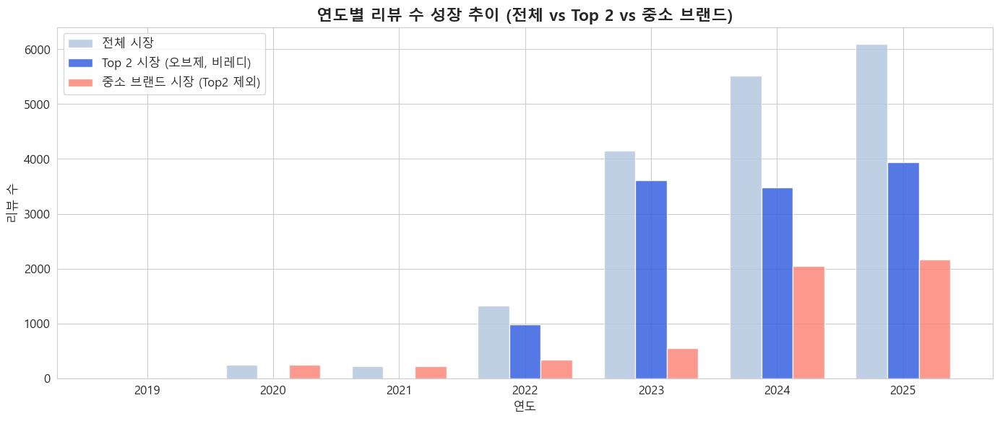

💄 남성 화장품 시장 분석 보고서
1. 프로젝트 개요 (Introduction)
"남자도 관리하는 시대"
대한민국 남성들의 화장품 사용이 보편화되고 있습니다. 이제는 비비크림을 넘어 색조 화장까지 관심이 확장되고 있습니다. 하지만 여전히 많은 남성들은 오프라인 구매를 부끄러워하거나, 정보 부족으로 인해 어려움을 겪고 있습니다.
본 프로젝트는 남성 화장품 시장의 성장 원인을 분석하고, 이를 바탕으로 초개인화 화장품 추천 알고리즘을 개발하는 것을 목표로 합니다.
📊 브랜드별 리뷰 데이터 현황
주요 브랜드와 중소 브랜드 간의 리뷰 수 편차가 큼을 확인하였으며, 이를 기반으로 시장을 Major 브랜드와 중소 브랜드로 나누어 분석을 진행했습니다.
| 구분 |
브랜드명 |
리뷰 수 |
비고 |
| Major |
오브제 |
7,545 |
압도적 1위 |
| Major |
비레디 |
4,464 |
|
| 중소 |
원오브뎀 |
1,161 |
|
| 중소 |
그라펜 |
1,139 |
|
| 중소 |
라끌랑 |
965 |
|
| 중소 |
듀이셀 |
951 |
|
| 중소 |
다슈 |
728 |
|
| 기타 |
스웨거 |
261 |
|
| 기타 |
두잉왓 |
215 |
|
| 기타 |
정샘물 |
116 |
|
| 기타 |
엠도씨 |
30 |
|
2. 시장 분석 및 가설 검증
1-1. 남성 뷰티 시장의 성장 추세

- 2022년~2023년: 시장 성장기. 특히 2023년에 Major 브랜드(오브제, 비레디 등)의 리뷰 수가 폭발적으로 증가했습니다.
- 2024년 이후: Major 브랜드의 성장세는 다소 주춤한 반면, 중소 브랜드의 성장률이 눈에 띄게 높아지고 있습니다.
1-2. 중소 브랜드 급성장의 원인

- 신규 진입: 2024년에만 5개의 새로운 중소 브랜드가 시장에 진입하며 전체 리뷰 수 증가를 견인했습니다.
1-3. 2024년 시장 정체와 마케팅의 상관관계

- 반짝 상승 후 하락 패턴: Major 브랜드들은 특정 시기에 판매량이 급증했다가 다시 원래 수준으로 회귀하는 패턴을 보입니다.
- 인플루언서 마케팅 효과:
- 오브제: 덱스(DEX) 모델 발탁(23년 9월) 후 급성장 → 이후 하락.
- 비레디: 유튜버 '스완' 공동개발 및 홍보 시점에 리뷰 증가 → 이후 하락.
- 4세대 쿠션 출시(24년 10월): 신제품 출시와 함께 리뷰 증가 → 다시 하락세.

- 결론: 인플루언서 언급 및 마케팅 시기와 리뷰 증가 시기가 정확히 일치합니다. 이는 남성 소비자들이 홍보에 민감하게 반응하여 구매하지만, 이것이 지속적인 관심으로 이어지지 않음을 시사합니다.
1-4. 문제점 도출 및 개선 방안

- 다슈(DASHU)의 사례: 중소 브랜드임에도 불구하고 릴스/숏츠 등 숏폼 콘텐츠를 활용한 활발한 홍보로 조회수와 관심도 등락이 큽니다. 영상을 보고 구매하는 소비자가 많음을 반증합니다.
🚨 문제점
- 좁은 소비자층: 뷰티에 이미 관심 있는 사람들에게만 노출됨.
- 낮은 지속성: 홍보가 없으면 구매량이 급감함.
💡 개선 방안: 타겟 확장 전략


- 남성 특화 인플루언서 협업: 뷰티 유튜버뿐만 아니라, 남성 시청 층이 두터운 게임(팡이요), 경제/시사(윤루카스) 등 타 분야 인플루언서와의 협업을 통해 잠재 고객(Newbie)을 유입시켜야 합니다.
- 지속적인 숏폼 노출: 다슈의 사례처럼 릴스, 숏츠를 통해 지속적인 노출을 유도하여 신규 유입을 늘려야 합니다.
3. 페르소나(Persona) 심층 분석
Gemini를 활용하여 리뷰 데이터를 분석, 4가지 핵심 페르소나를 도출했습니다.
- 🎁 Gifter (여성 구매자): 남자친구/지인 선물용
- 🙋♂️ User (일반 사용자): 본인 사용 목적
- 👶 Newbie (입문자): 화장을 처음 시작함
- 👑 Loyalist (숙련자): 원래 화장을 즐겨함
2-1. 입문자(Newbie) vs 숙련자(Loyalist) 니즈 비교

Log-Odds Ratio 분석을 통해 그룹별 특징적인 키워드를 도출했습니다.
| 그룹 |
핵심 니즈 (Needs) |
선호 제품 특징 |
| 입문자 (Newbie) |
편리함, 자연스러움, 수염 자국 커버 |
올인원 스틱, 브러쉬 일체형, 수정 화장이 필요 없는 제품 |
| 숙련자 (Loyalist) |
성분, 신뢰도, 디테일한 표현 |
브랜드 신뢰도, 피부 타입에 맞는 성분, 정확한 톤 매칭 |
2-2. 선물하는 여성(Gifter)의 반응

- 보통 여성이 색상을 골라주기 때문에 톤 매칭 실패 확률이 낮습니다.
- "자연스럽다", "커버력이 좋다", "피부톤에 맞다"는 긍정적 반응이 주를 이룹니다.
🎯 페르소나별 추천 전략
- 입문자: 톤로션, 올인원 스틱 등 스킬이 필요 없는 '입문템' 추천.
- 숙련자: 트러블 없는 '순한 성분', 완벽한 커버를 위한 '쿠션/파운데이션' 추천.
- 선물러: 실패 없는 '베스트셀러 세트' 또는 '올인원' 제품 추천.
4. 부정 리뷰(Negative Review) 분석 및 제언
전체 리뷰 17,845건 중 부정 리뷰 523건(2.9%)을 정밀 분석했습니다.
3-1. 주요 불만 요인 (Executive Summary)
- 1위 🎨 색상 미스매치 (22.9%): "너무 밝다", "회색빛이 돈다"
- 2위 🧴 커버력 부족 (18.5%): "잡티가 안 가려진다"
- 3위 🚨 피부 트러블 (14.9%): "여드름이 났다", "따갑다"
3-2. 제품별 개선 권고안
🔴 최우선 개선 필요 (Critical)
- 오브제 (내추럴 커버 파데): 색상 다양화 및 성분 개선 시급 (커버력 2.45/5).
- 비레디 (블루 쿠션 4세대): 지속력 이슈 해결 및 고커버 라인업 추가 필요.
🟠 우선 개선 대상 (Priority)
- 다슈 / 라끌랑: 지속력(1.5점)이 매우 낮음. 무너짐 없는 포뮬러 개발 필수.
- 비레디 (블루 파데): 커버력(1.0점) 문제 심각. 전면 리뉴얼 필요.
3-3. 핵심 불만 키워드 (Log-Odds)
- 불만족 (+2.06)
- 유분기 (+1.56)
- 마스크 묻어남 (+1.50)
5. 전략적 제언 (Strategic Proposal)
🚀 단기 전략 (1~3개월)
- 색상 가이드 강화: 온라인에서도 실패 없는 호수 선택을 위한 가이드/앱 서비스 도입.
- CS 강화: 부정 리뷰 고객 대상 무료 교환 등 케어 프로그램 운영.
🚀 중장기 전략 (6개월~)
- R&D 투자: 다슈/라끌랑 등 지속력 문제 해결을 위한 포뮬러 개발.
- 라인업 세분화: 민감성 피부 전용(저자극), 지성 전용(매트) 등 피부 타입별 라인업 구축.
[부록] 초보자를 위한 유튜버 추천 가이드
남성 뷰티 입문자들을 위한 맞춤형 유튜버 추천 리스트입니다.
| 대상 |
추천 유튜버 |
특징 |
| 완전 초보 |
  |
기초 케어부터 메이크업까지. 스킨케어 기본기 교육. |
| 관리족 |
 |
성분 분석 전문가. 피부 타입별 과학적 제품 추천. |
| 운동하는 남자 |
 |
식단과 성분을 고려한 헬스인 맞춤형 추천. |